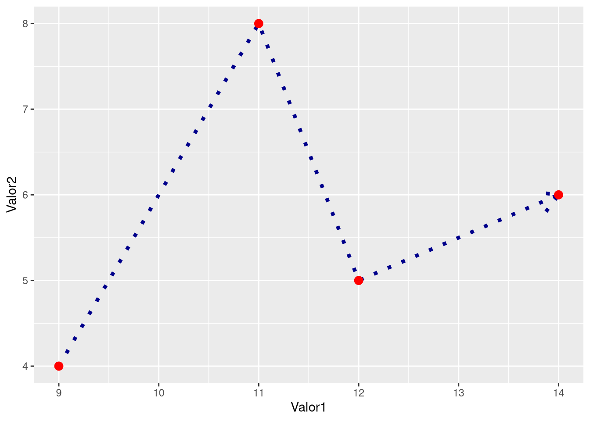

Capítulo 6 Análise de redes
Construindo
6.1 Pacote Igraph
Vamos testar o pacote fazendo um gráfico inicial.
A partir da ajuda do igraph - no caso, digitando ?igraph.plotting no console do R - temos alguns exemplos, como construindo um anel
library(igraph) # chamando o pacote##
## Attaching package: 'igraph'## The following objects are masked from 'package:stats':
##
## decompose, spectrum## The following object is masked from 'package:base':
##
## union g <- make_ring(10)
g$layout <- layout_in_circle
plot(g) É possível ainda plotar com os comandos
É possível ainda plotar com os comandos tkplot(g) e rglplot(g). Rode no seu console e veja a diferença nos gráficos.
Mas vamos a algo mais prático. Pegando o famoso poema:
“João amava Teresa que amava Raimundo que amava Maria que amava Joaquim que amava Lili que não amava ninguém”
library(igraph)
g <- graph.empty(directed=TRUE)
# Adicionando os vértices.
g <- g + vertex("João")
g <- g + vertex("Teresa")
g <- g + vertex("Raimundo")
g <- g + vertex("Maria")
g <- g + vertex("Joaquim")
g <- g + vertex("Lili")
# Adicionando os edges
g <- g + edges("João", "Teresa")
g <- g + edges("Teresa", "Raimundo")
g <- g + edges("Raimundo", "Maria")
g <- g + edges("Maria", "Joaquim")
g <- g + edges("Joaquim", "Lili")
plot.igraph(g)
Neste caso, poderíamos ter feito este mesmo gráfico da seguinte forma:
library(igraph)
g <- graph.empty(directed=TRUE)
# Adicionando os vértices.
g <- g + vertex(c("João", "Teresa", "Raimundo", "Maria", "Joaquim", "Lili"))
# Adicionando os edges em pares
g <- g + edges(c("João", "Teresa", "Teresa", "Raimundo", "Raimundo", "Maria","Maria", "Joaquim","Joaquim", "Lili"))
plot.igraph(g) Se o gráfico sobe ou desce, pouco importa para nós aqui, importa as pessoas e as relações entre elas.
Repare que os edges são entendidos aos pares. Se fizéssemos um vetor sem as devidas repetições, teríamos um gráfico errado das relações:
Se o gráfico sobe ou desce, pouco importa para nós aqui, importa as pessoas e as relações entre elas.
Repare que os edges são entendidos aos pares. Se fizéssemos um vetor sem as devidas repetições, teríamos um gráfico errado das relações:
g <- graph.empty(directed=TRUE)
g <- g + vertex(c("João", "Teresa", "Raimundo", "Maria", "Joaquim", "Lili"))
g <- g + edges(c("João", "Teresa", "Raimundo", "Maria","Joaquim", "Lili"))
plot.igraph(g)
Vamos a outro exemplo:
library(igraph)
g <- graph.empty(directed=TRUE)
# manually add our data.
g <- g + vertex("Elizabeth II")
g <- g + vertex("Philip")
g <- g + vertex("Charles")
g <- g + vertex("Diana")
g <- g + vertex("William")
g <- g + vertex("Harry")
g <- g + vertex("Catherine")
g <- g + vertex("George")
g <- g + edges("Elizabeth II", "Charles")
g <- g + edges("Philip", "Charles")
g <- g + edges("Charles", "William")
g <- g + edges("Diana", "William")
g <- g + edges("Charles", "Harry")
g <- g + edges("Diana", "Harry")
g <- g + edges("William", "George")
g <- g + edges("Catherine", "George")
g## IGRAPH 91b0f17 DN-- 8 8 --
## + attr: name (v/c)
## + edges from 91b0f17 (vertex names):
## [1] Elizabeth II->Charles Philip ->Charles Charles ->William
## [4] Diana ->William Charles ->Harry Diana ->Harry
## [7] William ->George Catherine ->Georgeplot.igraph(g)
6.2 Redes de palavras
A ser elaborado
6.3 Redes de citação
6.4 Gráfico de centralidade
A ser elaborado
6.5 Comunidades
A ser elaborado
6.6 Links Sugestões
- manual do igraph. Manual online do ipgraph para R; Arquivo PDF
- d’Andréa, Carlos Frederico de Brito. Pesquisando plataformas online: conceitos e métodos. EDUFBA. 2020.
- A obra visa introduzir os Estudos de Plataforma, um campo de estudos que, desde o início da década de 2010, discute as especificidades políticas e materiais das mídias sociais e de outras plataformas online. Datificação, algoritmos, governança e os modelos de negócio das plataformas são algumas das dimensões sintetizadas no livro. De modo didático, o autor apresenta um conjunto de leituras e de experimentações metodológicas conduzidas com um diversificado grupo de colaboradoras(es) no país e no exterior. (ebook PDF e Epub gratuitos)
- Recuero, Raquel. Introdução à análise de redes sociais online. EDUFBA.2017.
- A Análise de Redes Sociais (ARS) é uma abordagem de pesquisa cuja popularidade tem aumentado nos últimos anos, principalmente, entre os pesquisadores da área de Comunicação. É nesse âmbito que várias obras, entre artigos e livros, vêm surgindo e introduzindo o estudo dessas estruturas a partir da análise de redes e da compreensão da representação dessas redes sociais na internet. Este livro é uma pequena compilação dos principais conceitos e elementos para a compreensão e a aplicação da ARS. É baseado em uma breve apresentação e histórico do paradigma, os principais conceitos, suas métricas e, finalmente, suas formas de representação e visualização. (ebook PDF e Epub gratuitos).
- LIZARDO Omar; JILBERT Isaac. Social Networks: An Introduction. 2021. (ebook online)
- AQUINO, Jackson A. “Análise de redes sociais”, capítulo 12 de ___. R para cientistas sociais. Ilhéus, BA: EDITUS, 2014. 157 p. ISBN: 978-85-7455-369-6. (PDF gratuito)